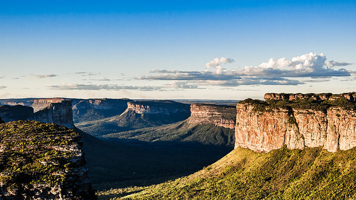
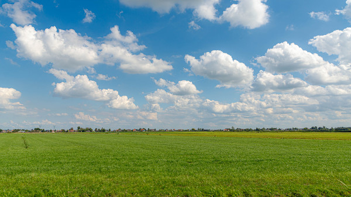
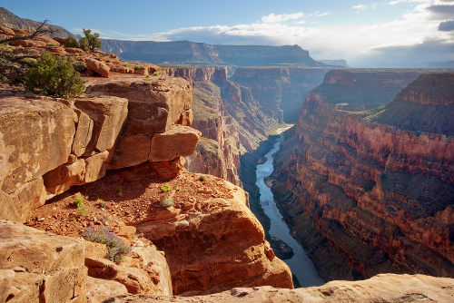

A Geografia é a ciência que se preocupa em compreender os aspectos e as dinâmicas do espaço geográfico, bem como a forma que ele transforma e é transformado pelas atividades humanas em âmbito sociocultural, ambiental, econômico, político, entre outros.
| Montanhas | Planaltos | Planícies | Depressões |
|---|---|---|---|
| Áreas de grande altitude e inclinação, geralmente formadas por movimentos tectônicos. | Superfícies elevadas e relativamente planas, com altitudes acima de 300 metros. | Áreas planas e de baixa altitude, geralmente formadas por deposição de sedimentos. | Áreas mais baixas que o entorno. |
|
 |  |  |